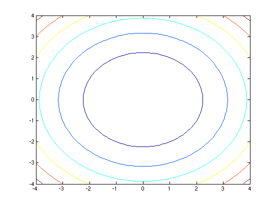
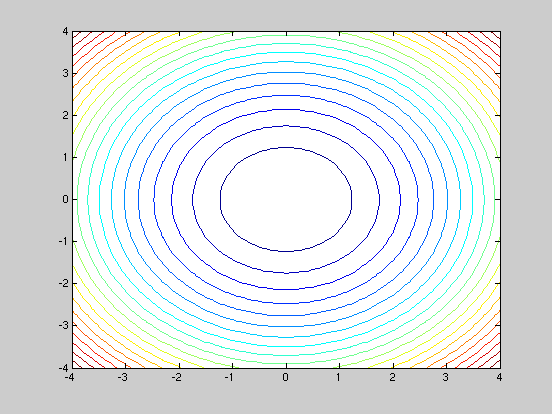
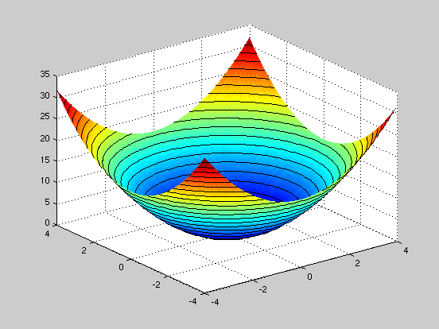
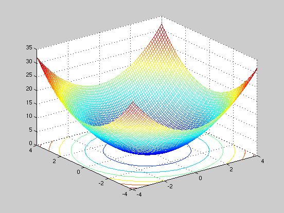
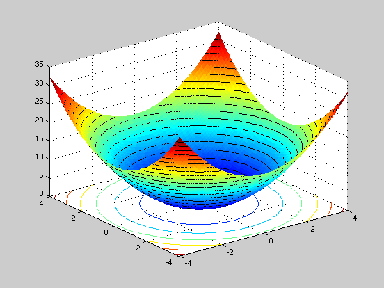

How to plot Surface Plots
JTK 2010.5.3
Contents
The Function
For our example function, we'll be plotting z = x^2 + y^2. This is essentially a two dimensional parabola.
Generating the X,Y Grid
The first thing to do is to generate an X,Y grid for our plot. Think of this grid as the equivalent of the latitude/longitude on Earth - and that we'll be later be plotting something (say topographic elevation) for each point on this grid.
x = -4:.1:4; % The range of x values. y = -4:.1:4; % The range of y values. [X,Y] = meshgrid (x,y); % This generates the actual grid of x and y values.
Generating the Z Data
To generate the actual Z data, all we need to do is create a function relating "X" and "Y" (the variables from the meshgrid --- not the ranges, 'x' and 'y').
Z=Y.^2+X.^2; % The function we're plotting. % Remember to use the correct vector notation for all operations (such as % using the '.^' operator to do piecewise powers).
Generating the Surface Plot
Next, all we need to do is to generate a contour plot!
figure(1); % Generating a new window to plot in. contour(X,Y,Z) % The surface plotting function. % Without any further qualifiers, MATLAB will automatically pick a scale % for the contours. You can, however, tell MATLAB how many contours you'd % like: figure(2); contour(X,Y,Z,20) 
Combining Contour and Surface Plots
(Please read the surface plot introduction before proceeding) To plot a contour plot ontop of a surface plot, all we do is plot the surface plot, tell MATLAB to wait, and then use the "contour3" plotting routine to plot a 3D contour ontop of the surface plot:
figure(3); surf(X,Y,Z,'EdgeColor','none') hold on contour3(X,Y,Z,20,'k') hold off % The color of the contour lines are by default a rainbow --- which will % make them blend into the underlying surface plot. We specified the color % to be black with the 'k' qualifier in the contour3 routine.
Contour Plots ontop of Surface Plots ontop of Contour Plots... oh my!
A further nifty command is "meshc" which plots a mesh surface plot, and generates a contour plot beneath it on the X,Y plane.
figure(4); meshc(X,Y,Z) % We can make arbitrarily complicated plots by merely combining different % plotting functions and using the "hold" function from previous: figure(5); shading interp meshc(X,Y,Z); hold on surf(X,Y,Z,'EdgeColor','none') contour3(X,Y,Z,20,'k') hold off 